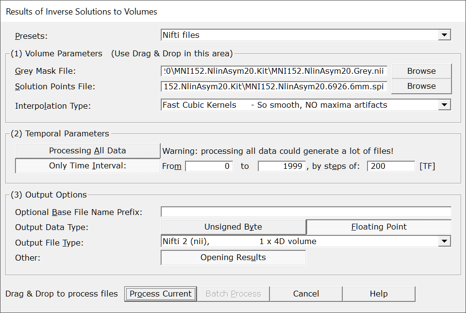

This toolbox will convert some .ris files, computed from this toolbox , into volumes . The aim is to be able to either display the results directly as volumes , or to fusion these results with other 3D modalities, like fMRI results.
Called from the Tools | Inverse Solutions | Results of Inverse Solutions to Volumes menu, the following dialog appears:

|
Presets |
You can quickly set the most important parameters according to some predefined scenarios. Then check and adjust the parameters to your liking. |
|
(1) Volume Parameters |
Input and output volumes parameters. |
|
Give here the grey mask volume associated with the Solution Points of of the inverse solution at hand. You can Drag & Drop a volume file here. This is the mask where the results will be actually computed. Don't give the full brain, or even worse, the full head, otherwise you will have a lot of wrongful extrapolated values. |
|
|
Solution Points File: |
The Solution Points file, i.e. the positions in the brain of the .ris files to be converted. You can Drag & Drop a .spi file here. |
|
How to compute all the intermediate voxels from the grey mask , given the sparse distribution of the solution points' positions. Pick one method from the list, sorted with increasing complexity and visual quality. |
|
|
(2) Timely Parameters |
|
|
Processing All Data |
Does what it tells, every data point from the .ris file will be sequentially converted to a volume. Be warry of the space it could take on your disk! |
|
Only Time Interval: |
Specify only a time interval to be converted. A much safer option than processing all data! |
|
From |
From which time frame (included).. |
|
To |
..to which time frame (included).. |
|
by steps of: |
..by time frame steps. Data will be read by blocks of steps size , then Median is applied for each solution points. Smaller steps will of course generated more data... |
|
(3) Output Options |
|
|
Optional Base File Name Prefix: |
You can give a meaningful file name prefix for all the resulting files, or leave it empty. Cartool will also postfix each file name with the current block of TFs. |
|
Currently, Cartool offers to save either the results as:
Integer values use less space, are faster, and are good enough for display. But this is not recommended for anything like statistics, as there will be some loss during conversion. Floating point values take more space, but are your real data. Use this option if you want to proceed with some statistics f.ex. |
|
|
Output File Type: |
Pick from the list the file format (container) you want to save your volumes to. |
|
Opening Results |
Does what is says. However, Cartool will prevent from opening too many files. |
|
Process Current |
Enabled when called from a Tracks (RIS) window, the preprocessing will apply only to this file. |
|
Batch Process |
Enabled when not called from a Tracks (RIS) window :
|
|
Cancel |
Quit the dialog. |
|
Help |
Launch the Help to the right page (should be right here...). |
The grey mask provided will constrain the outputs in some important ways.
As a reminder, solution points are indeed a downsampled version of the grey mask given during the computation of the inverse matrices. So you must use the same grey mask as the one used during the Inverse Matrix creation! Ris files, Solution Points and grey mask should match altogether to guarantee an optimal interpolation.
Here we can see how the grey mask and the solution points match (left), and and example of the interpolated results they can generate (right):
If the mask provided is bigger than the original grey mask, then it will not be optimally covered by the solution points distribution. Voxels too far from any solution point will end up being extrapolated (instead of interpolated), "created from nothing" so to speak. This is definitely something to be avoided.
Here we can see (left) that the brain has been used instead of the grey mask, or worse (right) the full head. A lot of internal voxels (white matter f.ex.), or external voxels (outside the brain) are literally created ex nihilo :
In summary, use the correct grey mask associated to the inverse matrice's solution points . All other masks will generate some problems of their own (and who needs more problems?).
We can compute the value of any voxel that sits within a reasonable range of a set of solution points . To do that, we need an interpolation formula that will combine the solution points' values, into a new value.
Cartool provides 4 interpolation methods, all with pros and cons. There is no perfect method, any of them is basically creating values where there were none beforehand. This is not specific to Cartool, inverse solutions or EEG itself, just a general consideration.
Here are the interpolations that have been deemed to be safe enough, so you can make up your mind (or use the default if you can't):
| Method | What it does | Pros | Cons |
| 1 Nearest Neighbor | The value from the single closest solution point is taken |
No new values are created, you see
only your data No new maxima are created |
No new values are created, so not really an
interpolation.. Results look like little cubes - visual aspect is therefor not very engaging (unless you are into cubism) |
| 4 Nearest Neighbors | The values from the 4 closest solution points are taken, and mixed up according to the inverse of their relative distances |
A
well-know interpolation
This is the interpolation used for display of inverse solutions No new maxima are created |
Results look a bit jagged or serrated |
| Linear | The values from the 8 solution points around a given voxel are taken, and linearly mixed |
A well-known interpolation No new maxima are created |
Results are smooth, but still look a little bit like patches or blocks |
| Cubic Spline | The values from a box of 5x5x5 (125) solution points around a given voxel are taken, and mixed up according to a cubic B-spline kernel |
Best looking results
so smooth, any
reviewer resisting its sex-appeal is desperately cold-hearted
No new maxima are created with the Cartool implementation only |
Your colleagues will be jealous, deal with it |
See here a side by side visual comparison of the 4 interpolations, 1NN (top left), 4NN (top right), Linear (bottom left) and Cubic Spline (bottom right):
To conclude, the Cartool implementation of these interpolation methods has been done in such a way to ensure that no new maxima are being artificially created.
This is an important point, as f.ex. a regular Cubic B-Spline interpolation can generated new maxima, and even negative values even from a positive input. This is to be totally avoided, as the maximum position can be of utmost importance, and artificially displacing it is not an option.
Cartool can currently output 2 types of data:
When saving into integer, data will be rescaled by an optimal power-of-10 factor , so that the rescaled value will fit into [0..255]. F.ex. data in a range of 0.0006 to 0.0230 will be multiplied by 10'000 so to finally fit in the range 6 to 230.
Whereas no scaling is needed when saving as floating points. The exact values are written to file.
If you aim at doing statistics, or proceed with some more processing of your own, then save as floating points at the cost of bigger files. If you just aim for visualization, then you may use the unsigned byte version, which produces smaller files.
Preprocessed files are written in the same directories as their sources.
Output file names can have the user's prefix
added, and a postfix composed from the current
block of time frames
.
To remember that we are dealing with
volumes from .ris, the .ris
string is added before the file extension, too:
<input file>.<infix>.TFXXX-YYY.ris.hdr
or
<prefix>.<input file>.TFXXX-YYY.ris.hdr
Verbose file .vrb (text), showing all the parameters.